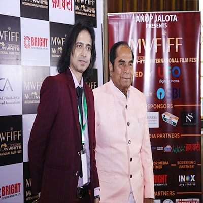
2019
D.Y. Patil - Guest Of Honour
"Governor of Bihar State"
Dnyandeo Yashwantrao Patil was Governor of Bihar state in eastern India from 29 May 2012 to 26 November 2014. He was appointed as the Governor of West Bengal.
He was appointed the Governor of Tripura state on 21 November 2009 and took the oath of office and secrecy on 27 November 2009. He was appointed as the Governor on 9 March 2012. He also received the Padma Shri Award in 1991 for his social work.
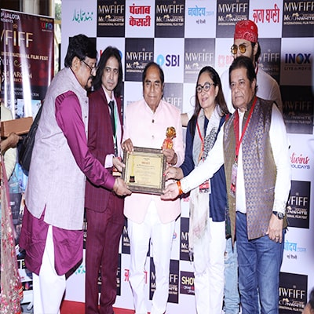
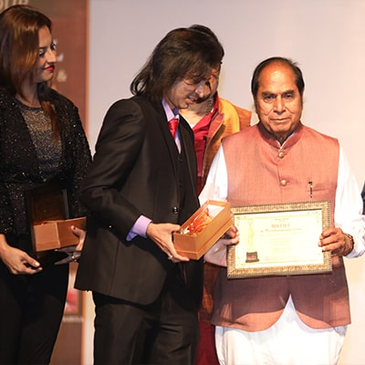
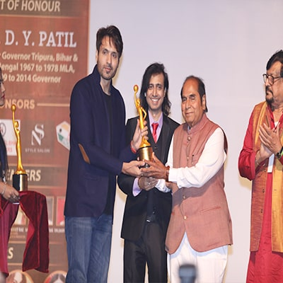
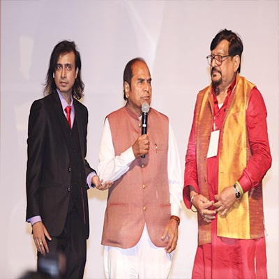
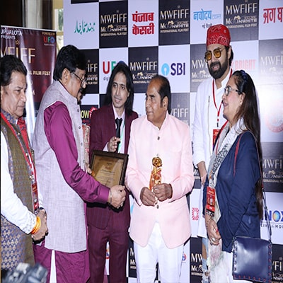
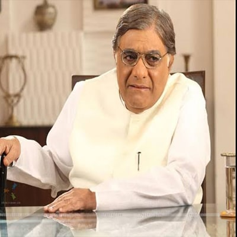
Aanjjan Srivastav - Celebrity
"FILM ACTOR"
Aanjjan Srivastav is an Indian film, television and stage actor, associated with Indian People's Theatre Association (IPTA) in Mumbai of which he remained Vice-President for several years.
His most notably Bollywood films like Gol Maal, Bemisal, Khuda Gawah, Kabhi Haan Kabhi Naa and Pukar. On television, he made his mark as the quintessential "common man" in the TV series Wagle Ki Duniya (Wagle's World) (1988–90) and Wagle Ki Nayi Duniya, where he played the lead role, apart from Yeh Jo Hai Zindagi (1984) and Nukkad.
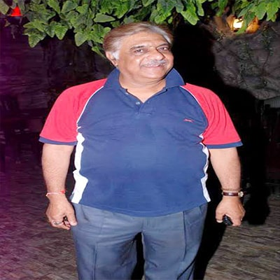
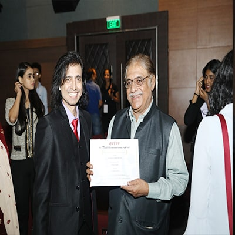
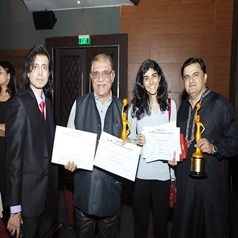
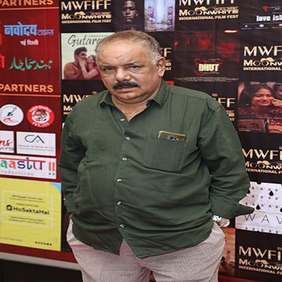
Anant Jog - Celebrity
"FILM ACTOR"
Anant Jog is an Indian film and television actor who acts in Hindi and Marathi language films. He has also acted in Garv: Pride and Honour in 2004, Rowdy Rathore, No Entry
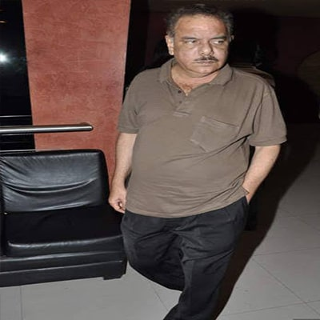
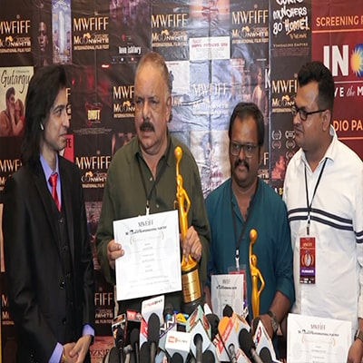
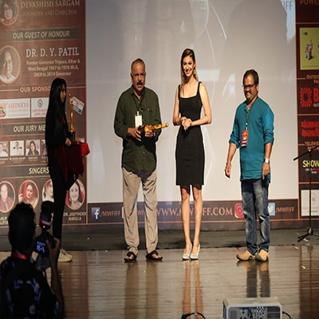
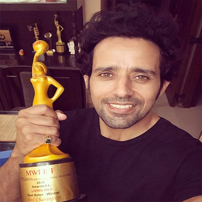
Anil Charanjeett - Celebrity
"FILM ACTOR"
Anil Charanjeett is an Indian Bollywood film actor who has worked in films like PK, Singh Is Bling, Raees and Hasee Toh Phasee. He gave a special appearance in the song "Main Badhiya Tu Bhi Badhiya" from the movie Sanju.
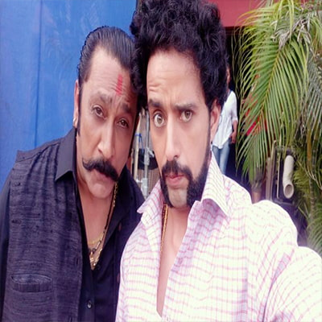
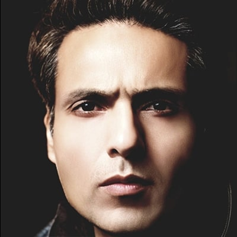
Mohammed Iqbal Khan - Celebrity
"FILM ACTOR"
Mohammed Iqbal Khan more commonly known as Iqbal Khan, is an actor on Indian television and has also worked in Bollywood. He was a part of Falguni Pathak's "Indhana Mirwa" music video.His television debut was as Angad Khanna in the serial Kaisa Ye Pyar Hai. This serial turned him into an instant star. He played Angad Khanna in the serial Kaisa Ye Pyar Hai. Soon after he went on to play the character of Shaurya in Kavyanjali and Raghu for Kahiin To Hoga. After the ending of Kaisa Ye Pyar Hai he went on to do another serial Karam Apnaa Apnaa, where he played the role of Shiv Kapoor.
He appeared in Waaris and portrayed the lead role of Rudra on the serial Sanjog Se Bani Sangini . He portrayed a role of Dr. Viren Roy in Yahaaan Main Ghar Ghar Kheli from March–June 2012. In 2015 Iqbal joined hands with Ekta Kapoor and was cast in a double role on a limited episode series for Sony Entertainment. He won two awards for this role.
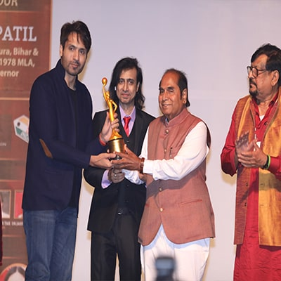
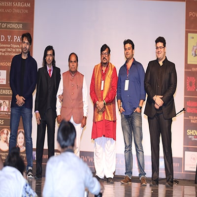
Ishtiyak Khan - Celebrity
"FILM ACTOR"
Ishtiyak Khan is an Indian actor. He is best known for his role as Hiraman Tiwari in the film Anaarkali of Aarah, as well as portraying Chaurasia in Bharat, Vasu (Lawyer from Rohtak) in Jolly LLB, Sunny in FryDay, and Munna in Ammaa Ki Boli. Some of his Bollywood Film Tamasha, Anaarkali of Aarah, Fukrey Returns.
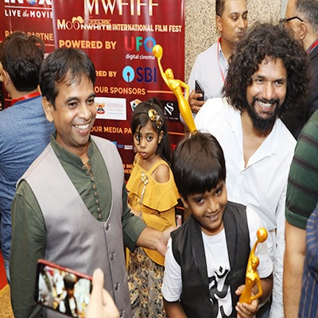
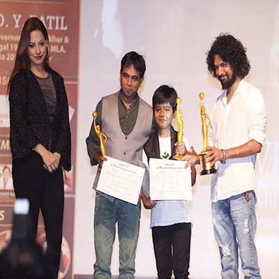
Kanwaljit Singh - Celebrity
"FILM ACTOR"
Kanwaljit Singh is an Indian actor who has performed in films as well as television serials. He has acted in Hindi and Punjabi films. His most notably Bollywood films like Satte Pe Satta, Dil Maange More, Bang Bang! Ek Ladki Ko Dekha Toh Aisa Laga.
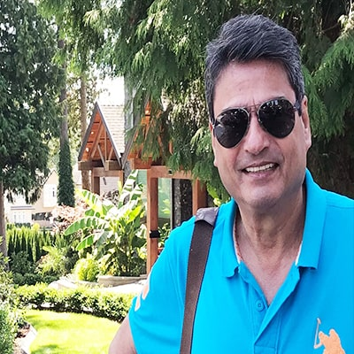
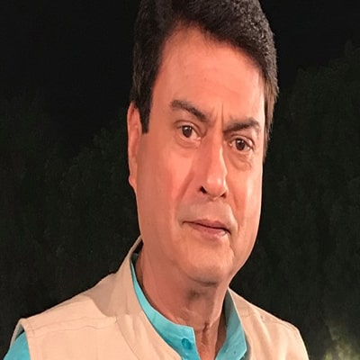
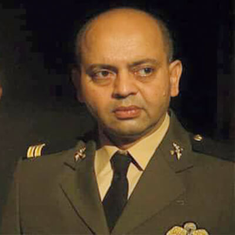
Kenny Desai - Celebrity
"FILM ACTOR"
Kenny Desai is an Indian Actor known for Raag Desh(2017) ,Dil Jo Na Keh Saka(2017) and Humpty Sharma Ki Dulhania(2014) Kenny Desai is also known for Sirf....: Life Looks Greener on the Other Side(2008) ,Krazzy 4(2008) and Phoonk(2008).
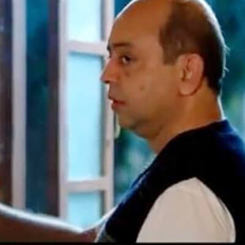
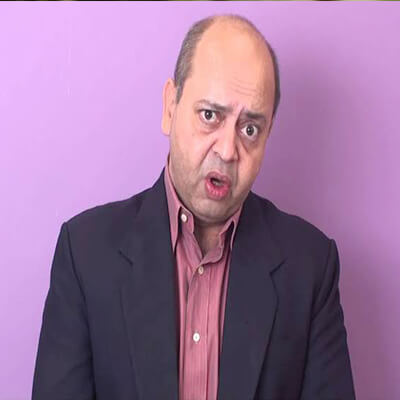
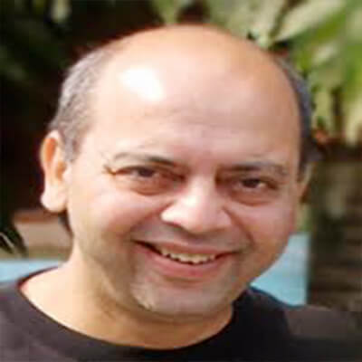
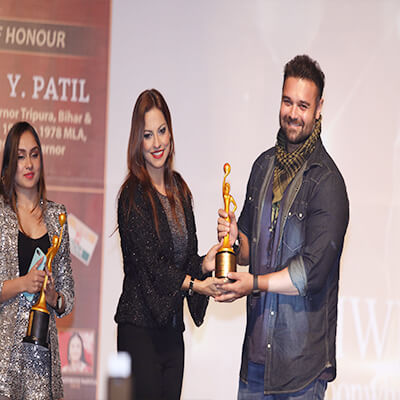
Mahaakshay Chakraborty - Celebrity
"FILM ACTOR"
Mahaakshay Chakraborty debuted as "Mimoh" with a lead role in the 2008 film Jimmy, playing a DJ, who is falsely accused of murder, which leads him into the crime world. He was nominated for a Filmfare Award for Best Male Debut. He then starred in the action flick, The Murderer, which is still waiting in cans to release.
In 2011, his first release was Haunted - 3D which was the first Indian stereo-scopic 3D horror film. The film went on to become a huge critical as well as commercial success and was Chakraborty's first hit. In his next and latest release, Loot, he plays a boy-next-door, who has been taken to Pattaya to rob a house, although him and his crime-partners (Govinda, Suniel Shetty and Jaaved Jaffrey) end up looting the wrong house. Loot received mixed to negative reviews from most critics, and was a box office flop.
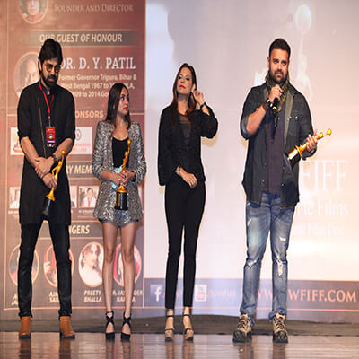
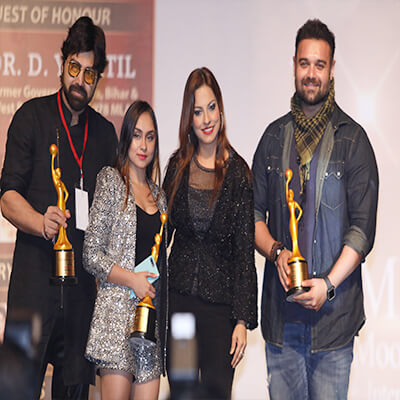
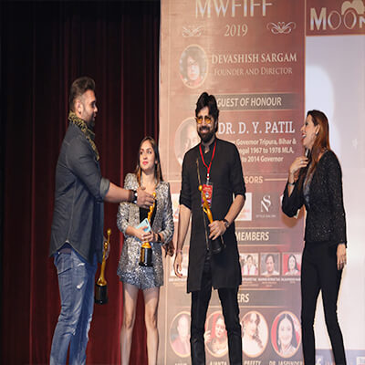
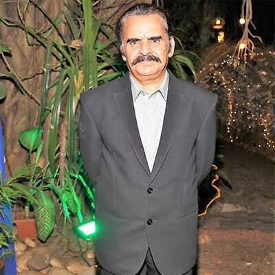
Ravi Jhankal - Celebrity
"FILM ACTOR"
Ravi Jhankal is an Indian television, stage and film actor, most known for working in Shyam Benegal's films, including Welcome to Sajjanpur (2008) and Well Done Abba (2010) and for the role of P. V. Narasimha Rao in Pradhanmantri (TV Series).
Some of his Filmography Panchlait, Agneepath, Koi Mil Gaya, Mangal Pandey: The Rising , Chameli Ki Shaadi.
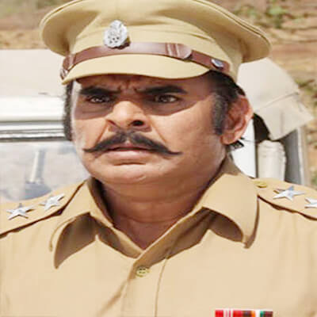
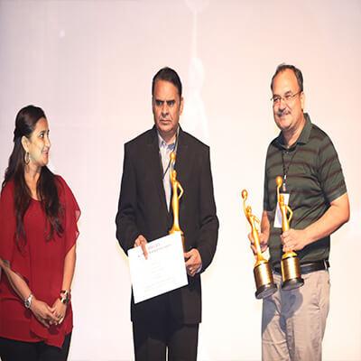
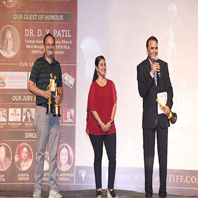
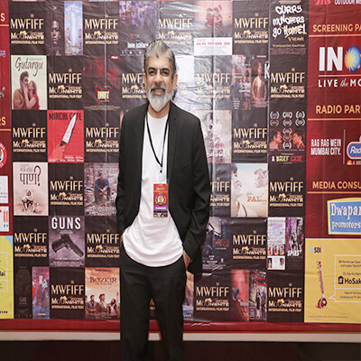
Rituraj Singh - Celebrity
"FILM ACTOR"
Rituraj Singh is an Indian television actor. He has played his different roles in a number of Indian TV shows like Banegi Apni Baat aired on Zee TV in 1993, Jyoti, Hitler Didi, Shapath, Warrior High, Aahat, and Adaalat, Diya Aur Baati Hum. He is also famous for the role of Balwant Chodhary in the Colors TV serial Laado 2. He is also know for the film Badrinath Ki Dulhania .
Some of his famous Tv Shows apperance Meri Awaaz Hi Pehchaan Hai, Trideviyaan, Laado -2 & many more.
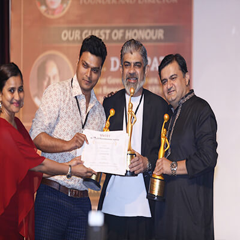
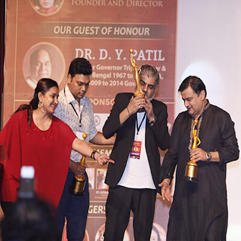
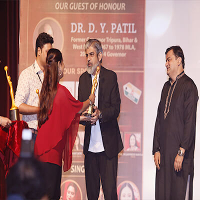
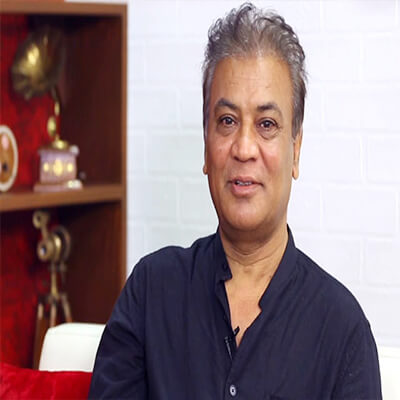
Vipin Sharma - Celebrity
"FILM ACTOR"
Vipin Sharma is an Indian film actor known for his works predominantly in Hindi Cinema. He is an alumnus of National School of Drama, New Delhi, India and the Canadian Film Centre, Toronto, Ontario, Canada. In Taare Zameen Par (2007), written by Amole Gupte and directed by Aamir Khan, he played the role of a dyslexic child's father. He was last seen in the popular web series What The Folks, produced by Dice Media, which ended up being one of India's most successful digital shows of 2017. SOme of his films are Jannat , Saheb Biwi aur Gangster, Gangs of Wasseypur , Shaadi Mein Zaroor Aana , Baaghi 2 ,The Accidental Prime Minister , Gone Kesh . Some of his Television appearance Bharat Ek Khoj ,Satyameva Jayate (ZEE5 Originals Bengali) (2019), The Final Call (2019)
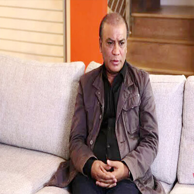
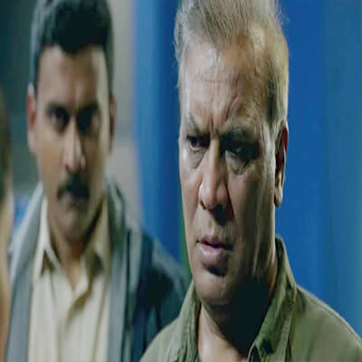
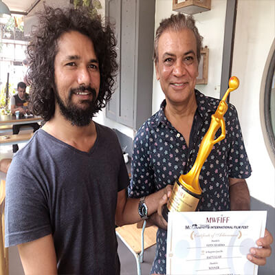
Geetanjali Mishra - Celebrity
"FILM Actress"
Geetanjali Mishra is a Indian Actress. Geetanjali Mishra hails from Mumbai, Maharashtra, religion belongs to is Hindu and nationality, Indian. Geetanjali Mishra is notable celebrity among Hindi Film Actresses, Hindi Television Actresses, also famous for Piya Ka Ghar, “Ek Ladki Anjaani Si, Sangam on Star Plus, Crime Patrol and many more Tv serials, & award winning short films
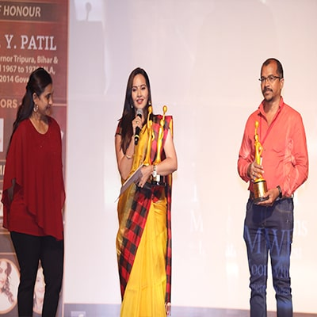
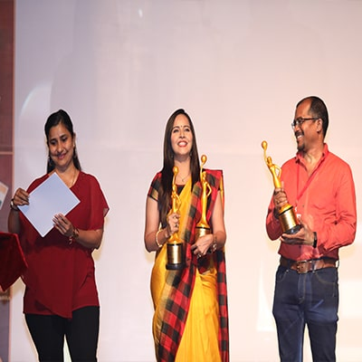
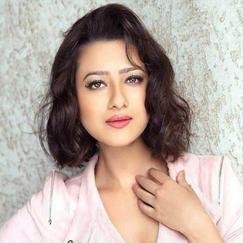
Madalsa Sharma - Celebrity
"FILM Actress"
Madalsa Sharma was born to film producer and director Subhash Sharma and actress Sheela Sharma. Madalsa Sharma made her acting debut in the 2009 Telugu film Fitting Master by E.V.V. Satyanarayana. The next year she made her debut in the Kannada film industry with Shourya, which gave a great boost to Madalsa's career.
Later in 2014, her second Hindi film, Sooraj Barjatya Rajshri Productions' Samrat & Co. released. Some of her films Mausam Ikrar Ke Do Pal Pyar Ke, Dil Sala Sanki, Angel etc.
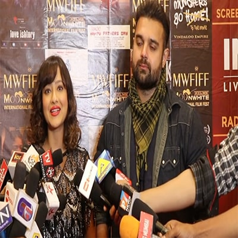
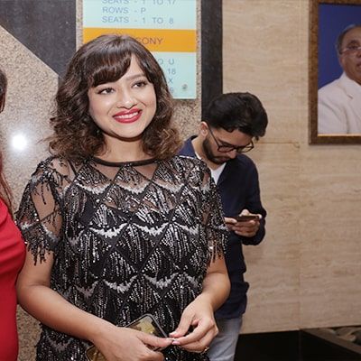
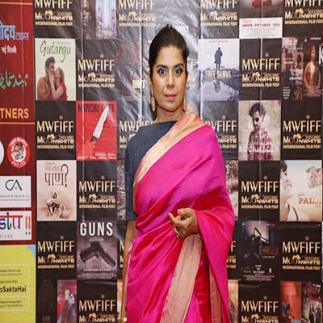
Mita Vasisht - Celebrity
"FILM Actress"
Actress Mita Vasisht is an Indian, film, television and theatre actress. She known for her range of roles that she has played in television from Space City Signma, Pachpan Khambe Laal Deewarein, Swabhimaan, Alaan (Kirdaar) to Trishna in Kahani Ghar Ghar Ki and Jethi Maa in Kaala Teeka to film roles with a wide spectrum of directors with different cinema styles.Some of her films Youngistaan , Gangoobai, Taal , Ghulam , Dil Se.., Chandni , Kuch Khatti Kuch Meethi , etc.
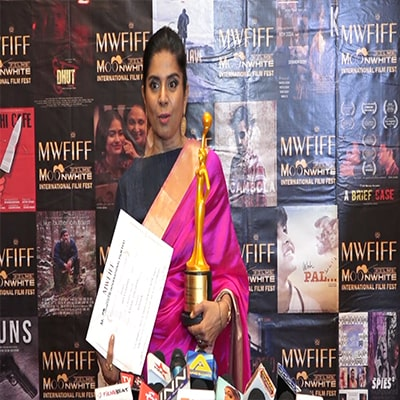
Ashish Vidyarthi - Celebrity
"FILM ACTOR"
Ashish Vidyarthi is an Indian film actor and motivational speaker, known for his work in 11 different languages, predominantly in Tamil, Kannada, Malayalam, Telugu, Hindi, Bhojpuri, Bengali, English, Odia and Marathi cinema. He is noted for his antagonist and character roles. He also acted in the TV serial, Ham Panchi Ek Chal Ke. In 1995, he received the National Film Award for Best Supporting Actor for Drohkaal. Some of his films 1942: A Love Story, Baazi, Jeet, Mrityudaata, Major Saab , Badal, Refugee, Kick 2, Chalbaaz , Haider etc.
Choreographer Pappu - Celebrity
"FILM ACTOR"
Choreographer Pappu Bollywood Dance Duo from Mumbai, Pappu Maalu and their work was honored at an International level as they were the first Indian Choreographers to be invited to work for Cannes, where they choreographed Shilpa Shetty’s performance. For Pappu, at every step of his life, dance has been an act of resistance to expectations, people and ideologies. What once was an act to ground him into distilled and sustained focus, has gradually become his ammunition for challenging the status quo, his vehicle for passion and his very own language of survival.
Jasleen Matharu - Celebrity
"Singer"
Jasleen Matharu is a Singer, performer and actor born and brought up in Mumbai.
She started learning classical and western music at the tender age of 11 and went on to win the best female singer title at the inter-college competition at the age of 16. She has also performed with singer Mika Singh's troupe for over 3years all over India.As a result of her upbringing in an environment at home where interest in different art forms was encouraged, Jasleen became a trained dancer in bharatnatyam, hip-hop, salsa, belly-dancing and is a pro at Bollywood jhatkas too! She is also a brown belt in kickboxing and has been practicing it for the past 7 years. Jasleen looks up to her father Kesar Matharu as an inspiration. It's because of his guidance and encouragement that she has achieved so much till now. 'Love Day Love Day' is Jasleen's solo debut album as singer and performer. The the music has been rendered by Dj Sheizwood and the video has been directed by Kesar Matharu. Jasleen intends to make the natural progression to acting and singing in films in the near future soon!
Anant Mahadevan
"FILM ACTOR"
Anant Mahadevan is an actor in Mumbai.
Maalu - Celebrity
"CHOREOGRAPHER & DIRECTOR IN BOLLYWOOD"
Kavita Gandhi better known as “Maalu” was born and brought up in Bombay. She would sway to music even as an infant, because music was a part of her household with one of her brothers being a choreographer and father a violinist.
She started off as a back ground dancer with her brother Lollypop, at the age of 6. She went on to do a lot of shows with him and started assisting him at the age of 10.
In the year 2000, Sanjay Leela Bansali noticed her work in Grasim Mr. India which was being held in Jaipur and requested her to choreograph for “Devdas”. They did two songs for “Devdas” – Chalak Chalak and More Piya. In fact song More Piya was nominated for the National Award. Sanjay repeated the choreographers in “Saawariya”, They were also invited by the Yash Raj Banner for the film “Thoda Pyaar Thoda Magic” Rani Mukherjee loved their work.
Himesh Reshammiya got attracted by the work and requested them to choreograph a song for “Aap Ka Suroor”. .
Maalu’s work was honoured at an International level as they were the first Indian choreographers to be invited to work for “Cannes”, where they choreographed Shilpa Shetty’s performance. For “Nach Baliye” Maalu choreographed for all the celebrities like Hrithik, Shahrukh, Rani Mukherjee and others. The finest point was that they were appreciated by almost all the celebrities.


.jpg)
2018
Ravi Tripathi - Celebrity
"INDIAN IDOL FAME"
Ravi K. Tripathi is an Indian playback singer, composer and music director. He competed on the television music realityshow Indian Idol season 2 in 2006.
Tripathi was the only Indian artist to have been invited to perform and represent India at the closing ceremony of Asian games 2010, in Guangzhou, China and became the only Indian performer of note after actor Raj Kapoor to have entertained the Chinese audience.
In 2017, he composed and produced a song Main Bharat Bol Raha Hoon, which received 129 thousand views on YouTube in 3 weeks. The song was featured by Ravi K. Tripathi, Kailash Kher, Shaan, Suresh Wadkar, Ankit Tiwari, Mayuresh Pai and Anant Bhardwaj.
Maalu - Celebrity
"CHOREOGRAPHER & DIRECTOR IN BOLLYWOOD"
Kavita Gandhi better known as “Maalu” was born and brought up in Bombay. She would sway to music even as an infant, because music was a part of her household with one of her brothers being a choreographer and father a violinist.
She started off as a back ground dancer with her brother Lollypop, at the age of 6. She went on to do a lot of shows with him and started assisting him at the age of 10.
In the year 2000, Sanjay Leela Bansali noticed her work in Grasim Mr. India which was being held in Jaipur and requested her to choreograph for “Devdas”. They did two songs for “Devdas” – Chalak Chalak and More Piya. In fact song More Piya was nominated for the National Award. Sanjay repeated the choreographers in “Saawariya”, They were also invited by the Yash Raj Banner for the film “Thoda Pyaar Thoda Magic” Rani Mukherjee loved their work.
Himesh Reshammiya got attracted by the work and requested them to choreograph a song for “Aap Ka Suroor”. .
Maalu’s work was honoured at an International level as they were the first Indian choreographers to be invited to work for “Cannes”, where they choreographed Shilpa Shetty’s performance. For “Nach Baliye” Maalu choreographed for all the celebrities like Hrithik, Shahrukh, Rani Mukherjee and others. The finest point was that they were appreciated by almost all the celebrities.

MR. Shiv Pandit - Celebrity
"FILM ACTOR"
Shiv pandit made his screen debut in 2011 with the critically & commercially successful Hindi film 'Shaitan' where he got noticed and was nominated for the Filmfare Award for Best Male Debut. He went on to debut as a lead actor in the Tamil film Leelai.
After having featured in several T.V. commercials for popular brands (Sprite, Airtel, Tide, Colgate & LG to name a few), Pandit landed the lead role in the Television Sitcom 'FIR' in 2006. Post his stint on the show, he was contracted as the host for the 1st edition of the Indian Premier League on Set MAX for the show 'Extraaa Innings T20' in 2008. He worked as actor in films such as shaitan (2011) Boss (2013), mantra (2017), 7hours to go (2016), Love (2015), Mumbai to Delhi (2014), Leelai (2012).


Shri R. D. Tyagi - Guest Of Honour
"IPS (Retd), Former Commissioner of Police, Mumbai."
Shri R D Tyagi joined ONFC after completing his Post Graduation in Physics. He joined Indian Army in 1962 as an Emergency Commissioned Officer and participated in Indo-Pak war of 1964-65, wherein he was awarded Raksha Medal and Samar Seva Starfor his services in the operations.
He served the Indian Army for five and half years and therafter joined the IPS and spent 32 years in the Indian Police. He worked as Commissioner of Police, Greater Mumbai and Retired as Director General, National Security Guard (Black Cat Commandos), New Delhi. Shri. R D Tyagi was one of the most effective and successful Police Officers of the Maharashtra Cadre. Shri R. D. Tyagi also runs an organization in Mumbai, India by the name Tiger Guards which is one of the biggest Private Security Guard Provider. The Organization imparts training to its personnel in basic duties of Security in all its dimensions, discipline and elementary laws pertaining to the security aspects, which are of great value to perform their duties with confidence. They are also trained in basic Fire fighting and rescue duties.The Commissioner of Police Greater Mumbai has granted the Arms License to the Company for possessing twenty seven 12 Bore Guns vide PER-PRO Fire Arms License No BO/2010/MAY/PER-PRO/98. The Company is in possession of its own 12 Bore Guns. Tiger Guards providing Armed Guards to the National Stock Exchange of India (NSE), Maharashtra State Co-op Bank Ltd, Syndicate Bank, Citizen Co-Operative Bank, Oriental Bank of Commerce, Saraswat co-operative Bank, Maharashtra State Co-operative Bank, ACE Co-operative Bank, Vaishya Co-operative Bank and IDBI Bank and also providing Armed Guards to other large number of commercial Establishments. Tiger Guards have their own Cash-Van Services. At present they provide Cash-Van Services to Banks and Foreign Exchange Companies and also provide specially built bullet resistant Cash Vans.Mr. Tyagi has taken to spirituality and meditation after his retirement and has published various books such as Happiness Unlimited, Yoga – The way to Divine Bliss etc for the betterment of mankind. The present book of success is also written based on his personal experience in the life and the practice of spirituality.